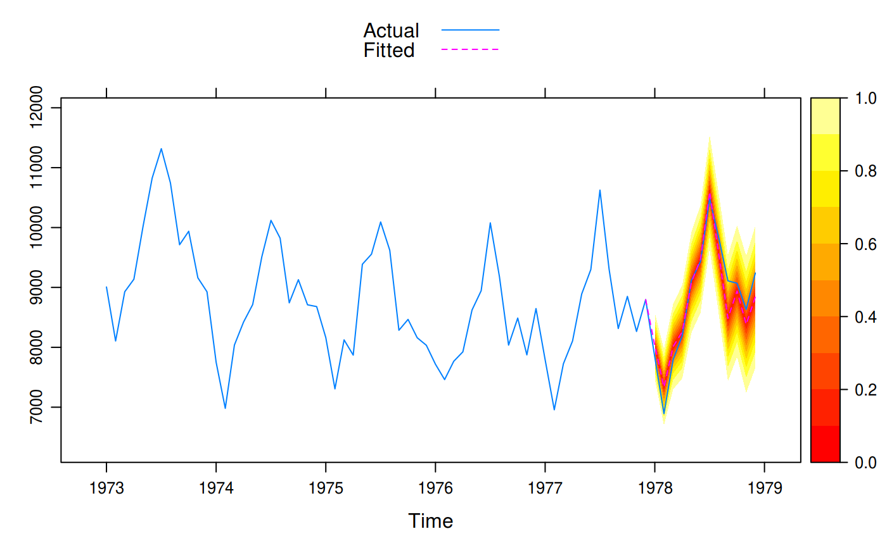

Plot forecasts from forecast::forecast(). It is built mostly to resemble
the forecast::autoplot.forecast() and forecast::plot.forecast()
functions, but in addition tries to plot the predictions on the original
scale.
# S3 method for forecast xyplot(x, data = NULL, ci = TRUE, ci_levels = x$level, ci_key = ci, ci_pal = hcl(0, 0, 45:100), ci_alpha = trellis.par.get("regions")$alpha, ...)
| x | An object of class |
|---|---|
| data | Data of observations left out of the model fit, usually "future" observations. |
| ci | Plot confidence intervals for the predictions. |
| ci_levels | The prediction levels to plot as a subset of those
forecasted in |
| ci_key | Set to |
| ci_pal | Color palette for the confidence bands. |
| ci_alpha | Fill alpha for the confidence interval. |
| ... | Arguments passed on to |
An object of class "trellis". The
update method can be used to
update components of the object and the
print method (usually called by
default) will plot it on an appropriate plotting device.
This function requires the zoo package.
if (require(forecast)) { train <- window(USAccDeaths, c(1973, 1), c(1977, 12)) test <- window(USAccDeaths, c(1978, 1), c(1978, 12)) fit <- arima(train, order = c(0, 1, 1), seasonal = list(order = c(0, 1, 1))) fcast1 <- forecast(fit, 12) xyplot(fcast1, test, grid = TRUE, auto.key = list(corner = c(0, 0.99)), ci_key = list(title = "PI Level")) # A fan plot fcast2 <- forecast(fit, 12, level = seq(0, 95, 10)) xyplot(fcast2, test, ci_pal = heat.colors(100)) }#>